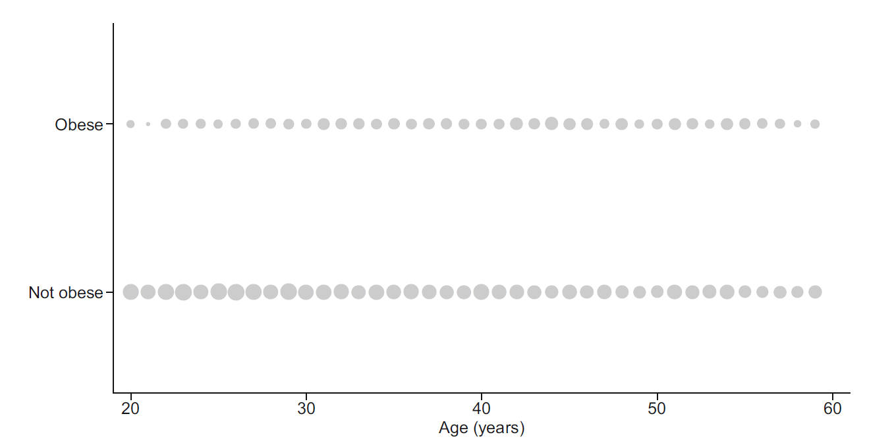
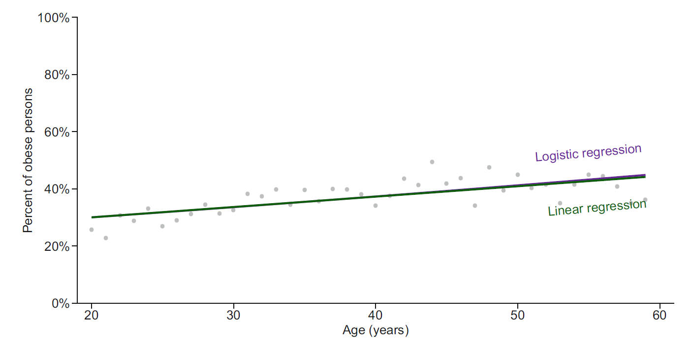
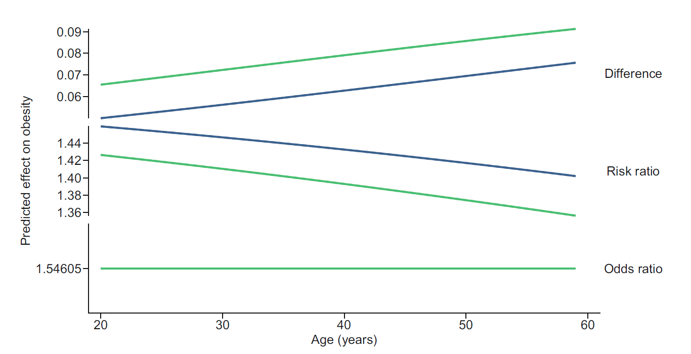
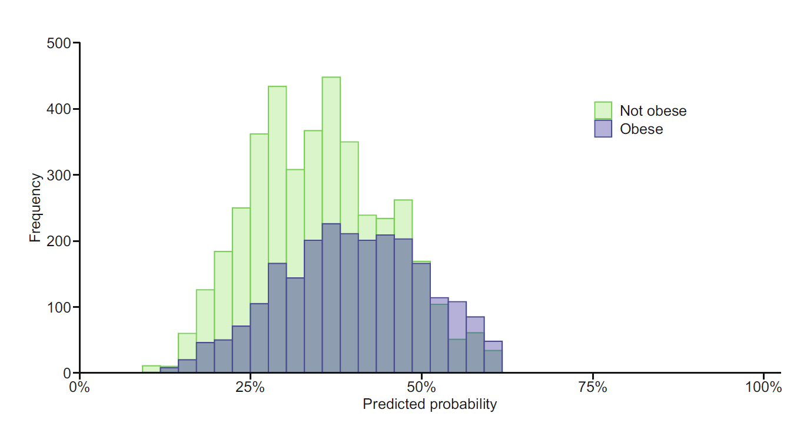
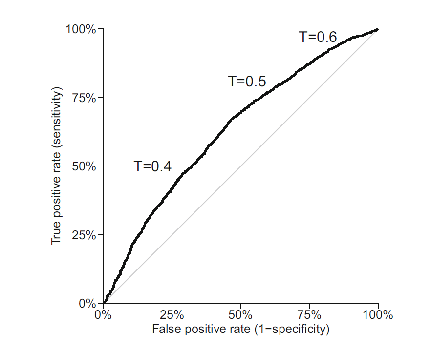
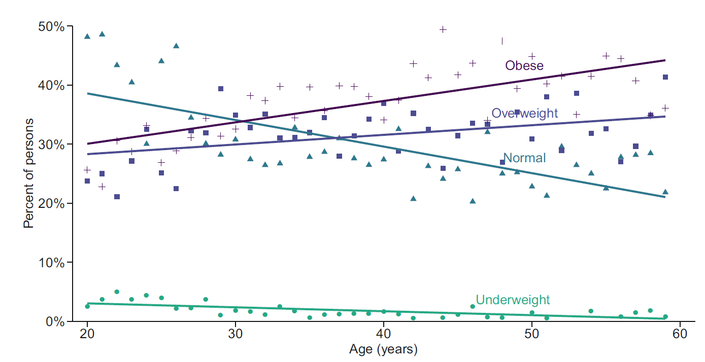

보건의료 연구에서는 질병의 유무, 치료 성공 여부, 재입원 여부, 사망 여부처럼 두 가지 상태만 갖는 결과가 매우 흔하다. 또한 건강상태, 보험 유형, 치료 선택, 체질량지수 범주처럼 세 개 이상의 범주를 갖는 결과도 자주 관찰된다. 이러한 결과는 연속형 수치와 달리 범주 사이의 간격이 정의되지 않으므로 평균과 분산을 그대로 적용하기 어렵다.
이 장에서는 이분형 결과를 위한 로지스틱 회귀와 세 개 이상의 범주를 위한 다항 로지스틱 회귀를 다룬다. 핵심은 결과변수의 조건부 평균이 아니라 특정 범주에 속할 확률을 공변량의 함수로 표현하는 것이다. 회귀계수의 오즈비 해석뿐 아니라 확률척도에서의 예측확률과 주변효과, 모형의 적합도와 예측성능 평가도 함께 살펴본다.
범주형 결과 분석에서는 세 가지 질문을 구분해야 한다. 첫째, 공변량과 사건 발생 사이에 어떤 연관성이 있는가? 둘째, 개별 대상의 사건 발생확률을 얼마나 정확하게 예측할 수 있는가? 셋째, 특정 개입이나 노출을 변화시켰을 때 사건위험이 얼마나 달라지는가라는 인과효과를 추정하려는가? 동일한 로지스틱 회귀식을 사용하더라도 필요한 가정, 변수 선택 원칙, 성능 평가 기준과 결과 해석은 연구목적에 따라 달라진다.
또한 이분형 결과에서는 효과를 여러 척도로 표현할 수 있다. 위험차이(risk difference)는 절대적 변화량을, 위험비(risk ratio)는 상대적 확률 변화를, 오즈비(odds ratio)는 상대적 오즈 변화를 나타낸다. 어느 척도가 가장 적절한지는 연구설계와 임상적 질문에 따라 결정해야 하며, 한 척도에서 일정한 효과가 다른 척도에서도 일정하다는 보장은 없다.
4.2 이분형 결과와 베르누이 분포
이분형 결과 \(Y\)는 두 값 중 하나를 갖는다. 일반적으로 관심 사건을 \(Y=1\), 사건이 발생하지 않은 상태를 \(Y=0\)으로 코딩한다. 예를 들어 비만이면 1, 비만이 아니면 0으로 둘 수 있다.
\[
P(Y=1)=p, \qquad P(Y=0)=1-p.
\]
이때 \(Y\)는 베르누이 분포를 따르며 평균과 분산은 다음과 같다.
\[
E(Y)=p,
\]
\[
\operatorname{Var}(Y)=p(1-p).
\]
따라서 이분형 자료에서 평균은 사건 발생확률과 동일하다. 회귀분석의 목적은 공변량 \(X\)에 따라 조건부 확률 \(P(Y=1\mid X)\)가 어떻게 변하는지를 설명하는 것이다.
이다. 중요한 점은 평균 \(p_i\)가 정해지면 분산도 동시에 정해진다는 것이다. 연속형 결과의 정규선형모형에서는 평균구조와 오차분산을 별도로 지정하지만, 베르누이 모형에서는 평균과 분산이 독립적인 모수가 아니다. 이 성질이 이분형 결과에 일반 선형회귀보다 일반화선형모형을 사용하는 근거가 된다.
로 표현하면 자연모수는 로그 오즈인 \(\log\{p_i/(1-p_i)\}\)이다. 따라서 로짓 연결함수는 베르누이 분포의 정준 연결함수(canonical link)이며, 로지스틱 회귀의 우도 계산과 추정 이론을 단순하게 만든다.
여러 대상의 결과가 독립이라는 가정도 중요하다. 동일 환자의 반복측정, 동일 병원의 환자, 가족 단위 자료처럼 관측치가 군집되어 있으면 단순 로지스틱 회귀의 평균구조가 맞더라도 표준오차가 과소추정될 수 있다. 이러한 자료에는 군집강건 표준오차, 일반화추정방정식 또는 일반화선형혼합모형이 필요하다.
4.3 이원분할표와 연관성 측도
NHANES 예시에서 20-59세 성인의 비만 여부와 조사연도를 교차분류하면 다음과 같다.
따라서 \(p_0\)와 \(p_1\)이 모두 0에 가까우면 \((1-p_0)/(1-p_1)\approx1\)이 되어 \(OR\approx RR\)이다. 반대로 사건이 흔할수록 이 보정항이 1에서 멀어져 OR과 RR의 차이가 커진다. 특히 OR을 “위험이 몇 배 증가하였다”라고 해석하면 상대효과를 과장할 수 있으므로 반드시 “오즈가 몇 배”라고 표현해야 한다.
예를 들어 위험이 1%에서 2%로 증가한 경우와 40%에서 80%로 증가한 경우는 모두 \(RR=2\)이지만, 위험차이는 각각 1%포인트와 40%포인트이다. 임상적 또는 정책적 의사결정에서는 상대효과뿐 아니라 절대위험과 위험차이를 함께 제시하는 것이 바람직하다.
무작위 임상시험이나 코호트 연구에서는 세 효과척도를 모두 직접 추정할 수 있다. 반면 환자-대조군 연구에서는 연구자가 사건군과 비사건군의 수를 정하므로 표본의 사건비율이 모집단 위험을 반영하지 않는다. 이 설계에서는 일반적으로 위험과 위험비를 직접 추정할 수 없지만, 적절한 표본추출 아래 노출 오즈비는 모집단의 질병 오즈비를 추정할 수 있다.
\(P(Y=1\mid X=0)\)
\(P(Y=1\mid X=1)\)
RR
OR
0.01
0.02
2.00
2.02
0.01
0.04
4.00
4.12
0.05
0.10
2.00
2.11
0.05
0.20
4.00
4.75
0.10
0.20
2.00
2.25
0.10
0.40
4.00
6.00
4.4 이분형 결과에 대한 선형회귀의 한계
이분형 결과를 선형회귀로 분석하면 조건부 평균이 확률이므로 다음과 같은 선형확률모형이 된다.
\[
P(Y=1\mid X)=\beta_0+\beta_1X.
\]
그러나 이 모형은 예측값이 0보다 작거나 1보다 커질 수 있다. 또한 베르누이 분포의 분산은 \(p(1-p)\)이므로 공변량에 따라 변한다. 이는 선형회귀의 등분산 가정과 맞지 않는다.

연령별 비만 비율에 선형회귀와 로지스틱 회귀를 적합하면 관측범위 안에서는 두 곡선이 비슷할 수 있다. 그러나 로지스틱 회귀는 모든 공변량 값에서 예측확률을 0과 1 사이로 제한한다.
첫 번째 그림은 이분형 개별 관측값이 0과 1 두 수평선에만 놓이기 때문에 원자료의 산점도만으로는 연령에 따른 확률 변화를 직접 읽기 어렵다는 점을 보여준다. 따라서 연령 구간별 비율, 평활곡선 또는 모형 기반 예측확률을 함께 제시해야 한다. 두 번째 그림에서 선형확률모형은 직선이므로 관측범위를 벗어나 외삽할 때 0 미만 또는 1 초과의 값을 만들 수 있지만, 로지스틱 곡선은 양 끝에서 각각 0과 1에 점근한다.
다만 선형확률모형이 항상 사용할 수 없는 것은 아니다. 계수 \(\beta_1\)이 공변량 1단위 증가에 따른 위험차이를 직접 나타내므로 해석이 단순하고, 상호작용도 확률척도에서 가법적으로 해석된다. 이분형 결과에서는 이분산성이 필연적이므로 선형확률모형을 사용할 때에는 강건 표준오차를 적용해야 한다. 예측확률의 범위 위반이 크지 않고 관심이 평균 위험차이에 있을 때에는 유용한 보조분석이 될 수 있다.

4.5 로지스틱 회귀
로지스틱 회귀는 일반화선형모형(generalized linear model)의 한 형태이다. 일반화선형모형은 다음 세 요소로 구성된다.
로지스틱 회귀에서는 \(g(p)=\operatorname{logit}(p)\)를 사용한다. 이 구조는 결과분포와 공변량 효과의 형태를 분리해 생각하게 한다. 베르누이 분포를 유지하면서 연결함수를 프로빗 또는 complementary log-log로 바꿀 수도 있지만, 로짓 연결은 계수를 오즈비로 해석할 수 있다는 장점 때문에 가장 널리 사용된다.
가 된다. 이 함수는 선형예측자 \(\eta_i\)가 어떤 실수값을 갖더라도 확률을 0과 1 사이로 제한한다.
역로짓 함수의 미분은
\[
\frac{dp_i}{d\eta_i}=p_i(1-p_i)
\]
이다. 기울기는 \(p_i=0.5\)에서 최대이고, \(p_i\)가 0 또는 1에 가까워질수록 작아진다. 따라서 동일한 로짓 변화라도 기준위험이 중간 수준일 때 확률 변화가 가장 크고, 매우 낮거나 높은 위험에서는 확률 변화가 작다. 이것이 로지스틱 회귀계수의 확률척도 효과가 대상자의 공변량 값에 따라 달라지는 이유이다.
어떤 공변량 조합이 사건과 비사건을 완전히 구분하면 완전분리(complete separation)가 발생한다. 예를 들어 특정 치료군의 모든 대상에서 사건이 발생하지 않았다면 해당 계수의 최대우도추정값은 음의 무한대로 발산한다. 준완전분리에서는 일부 조합만 완전히 구분된다. 이러한 상황에서는 계수가 매우 크고 표준오차도 불안정하며, 반복 알고리즘이 수렴하지 않거나 수렴한 것처럼 보여도 추정값을 신뢰하기 어렵다.
분리는 표본수가 작거나 사건수가 적고 공변량이 많을 때 흔하다. 범주 통합, 모형 단순화, 벌점우도에 기반한 Firth 로지스틱 회귀 또는 적절한 사전분포를 사용한 베이지안 로지스틱 회귀를 고려할 수 있다. 단순히 소프트웨어의 수렴 메시지만 확인하지 말고 교차표, 계수 크기와 표준오차를 함께 점검해야 한다.
연속형 공변량의 계수 \(\beta_j\)는 다른 공변량을 고정할 때 \(X_j\)가 1단위 증가함에 따른 로그 오즈의 변화이다. 지수화한 \(\exp(\beta_j)\)는 조정 오즈비이다.
범주형 공변량은 기준범주에 대한 더미변수로 표현한다. 예를 들어 남성을 기준으로 여성의 계수가 0.22이면, 다른 공변량이 같을 때 여성의 비만 오즈는 남성의 \(\exp(0.22)=1.25\)배이다.
연속형 공변량의 단위는 해석에 직접 영향을 준다. 연령을 1년 단위로 넣은 계수의 지수값은 1세 증가에 대한 오즈비이고, \(\mathrm{Age10}=\mathrm{Age}/10\)으로 재척도화하면 10세 증가에 대한 오즈비가 된다. 임상적으로 의미 있는 단위로 재척도화하면 지나치게 1에 가까운 오즈비를 피하고 해석을 명확하게 할 수 있다.
연속형 공변량과 로그 오즈 사이의 선형성도 가정해야 한다. 연령의 효과가 실제로 곡선형인데 \(\beta\,\mathrm{Age}\)만 포함하면 조정 오즈비와 예측확률이 왜곡될 수 있다. 다항항, 제한적 삼차 스플라인 또는 구간별 선형함수를 이용해 비선형성을 표현하고, 결과는 선택된 연령값에서의 예측확률이나 대비로 제시하는 것이 좋다.
이 구간은 로그 오즈비 척도에서 대칭이지만 오즈비 척도에서는 비대칭이다. 표본이 작거나 사건수가 적을 때 Wald 구간은 실제 포함확률이 낮아질 수 있으므로 프로파일 우도 신뢰구간이나 벌점우도 방법이 더 안정적일 수 있다.
4.6.3 조정 오즈비와 비축약성
오즈비는 비축약적(non-collapsible) 효과척도이다. 이는 공변량 \(Z\)가 노출 \(X\)와 독립이고 결과의 예측인자이기만 해도, \(Z\)를 포함한 조건부 오즈비와 \(Z\)를 제외한 주변 오즈비가 서로 달라질 수 있다는 뜻이다. 따라서 비조정 OR과 조정 OR의 차이가 반드시 교란 제거량을 의미하지 않는다.
교란과 비축약성을 구분하려면 인과구조를 먼저 고려해야 한다. 교란은 노출과 결과의 공통원인 때문에 발생하는 편향이고, 비축약성은 로짓 연결함수의 비선형성에서 생기는 수학적 성질이다. 서로 다른 연구나 모형의 조정 OR을 비교할 때 포함된 공변량이 다르면 이 성질 때문에 값이 달라질 수 있다. 임상적 해석에는 표준화된 위험, 위험차이 또는 위험비를 함께 제시하는 것이 도움이 된다.
이므로 \(\beta_{XZ}\)는 오즈비 척도의 효과수정을 나타낸다. 그러나 오즈비 척도에 상호작용이 없더라도 위험차이나 위험비 척도에는 상호작용이 있을 수 있다. 효과수정은 척도 의존적이므로 연구질문에 적합한 척도를 먼저 정하고, 층별 예측확률과 절대위험차이를 함께 제시해야 한다.
4.7 확률척도에서의 해석
로지스틱 회귀는 로짓척도에서는 선형이지만 확률척도에서는 비선형이다. 같은 오즈비라도 기준확률과 다른 공변량 값에 따라 확률 차이는 달라진다.
그림의 각 곡선은 공변량 값이 변할 때 예측확률이 S자 형태로 변화함을 보여준다. 곡선의 수직 위치는 절편과 다른 공변량에 의해 결정되고, 가파른 정도와 방향은 해당 계수에 의해 결정된다. 동일한 \(\beta_j\)라도 확률이 0.5 부근인 구간에서는 큰 확률차이를 만들지만, 곡선의 양 끝에서는 작은 차이만 만든다. 따라서 로짓척도 계수만으로는 임상적으로 체감되는 절대위험 변화를 충분히 전달하기 어렵다.
이다. 반면 로지스틱 회귀에 상호작용이 없다면 조건부 오즈비는 \(z\)와 무관하게 \(\exp(\beta_X)\)로 일정하다.
효과척도 비교 그림은 하나의 로지스틱 모형에서도 OR은 일정할 수 있지만 RD와 RR은 기준위험에 따라 달라질 수 있음을 보여준다. 특히 낮은 기준위험에서는 같은 OR이 작은 절대위험차이를 만들고, 중간 위험에서는 더 큰 차이를 만든다. 이는 환자 상담이나 보건정책 평가에서 절대위험을 함께 보고해야 하는 이유이다.
그러나 로그이항모형은 일부 공변량 값에서 \(p_i>1\)이 될 수 있어 수렴 문제가 발생한다. 실무에서는 포아송 평균모형에 로그 연결을 사용하고 강건 표준오차를 적용하는 수정 포아송 회귀(modified Poisson regression)가 흔히 사용된다. 결과가 이분형이어도 평균모형이 올바르면 회귀계수는 조정 위험비를 추정하며, 강건 분산이 포아송 분산 가정의 불일치를 보정한다.
위험차이를 직접 추정하려면 항등 연결을 사용한 이항모형
\[
p_i=X_i^{\mathsf T}\boldsymbol\beta
\]
을 사용할 수 있다. 이 모형도 확률범위와 수렴 문제가 있으므로 선형확률모형과 강건 표준오차가 실용적인 대안이 될 수 있다. 즉 효과척도 선택은 단순한 결과 보고 방식이 아니라 모형의 연결함수 선택과 연결된다.

4.7.2 주변효과와 재활용 예측
주변효과(marginal effect)는 다른 공변량의 관측분포에 대해 조건부 효과를 평균한 값이다. 이분형 노출 \(X\)의 평균 주변 확률차이는 다음과 같다.
로 계산된다. 이는 평균 공변량에서의 주변효과와 다르다. 평균 공변량에서 한 번 계산하는 방식은 실제로 존재하지 않는 공변량 조합을 만들 수 있으므로, 각 대상에서 계산한 뒤 평균하는 방법이 일반적으로 더 자연스럽다.
4.8 모형 구축과 평가
로지스틱 회귀의 평가는 연구목적에 따라 달라진다. 설명 또는 인과추론이 목적이면 계수의 편향, 교란 통제와 모형의 구조적 적절성이 중요하다. 예측이 목적이면 새로운 자료에서의 보정도, 판별력과 임상적 유용성을 평가해야 한다. 전체 자료에서의 적합도만으로 예측성능을 판단하면 낙관적 편향이 생기므로 교차검증이나 외부검증이 필요하다.
4.8.1 이탈도와 모형 비교
포화모형은 각 관측치의 결과를 완벽하게 재현하는 모형이다. 적합모형과 포화모형의 로그우도 차이에 기반한 이탈도(deviance)는
이고, 점수 검정은 귀무가설 아래의 점수함수와 정보행렬을 사용한다. 큰 표본에서는 세 검정이 유사하지만 작은 표본, 희소자료 또는 계수가 매우 큰 경우 Wald 검정이 불안정할 수 있다. 범주형 변수나 스플라인처럼 여러 계수로 표현된 효과는 개별 p값보다 공동 우도비 검정으로 평가하는 것이 적절하다.
두 지표는 적합도와 복잡도 사이의 균형을 평가하며 값이 작을수록 선호된다. BIC는 표본수가 커질수록 복잡한 모형에 더 큰 벌점을 부여한다.
AIC는 새로운 관측치에 대한 평균적인 예측 손실을 줄이는 모형 선택과 관련되고, BIC는 후보모형 중 참모형이 존재한다는 조건에서 그 모형을 선택하는 일관성을 목표로 한다. 두 기준은 서로 다른 목적을 가지므로 값 자체를 절대적 적합도 지표처럼 해석해서는 안 된다. 또한 동일한 결과와 동일한 자료에 적합한 모형끼리만 비교해야 한다.
AIC나 BIC로 변수를 자동선택하면 계수의 표준오차와 p값이 선택과정을 반영하지 못해 지나치게 낙관적일 수 있다. 설명모형에서는 임상지식과 인과구조에 따라 공변량을 정하고, 예측모형에서는 벌점회귀와 재표본추출 기반 검증을 함께 사용하는 것이 바람직하다.
4.8.4 보정도
보정도(calibration)는 예측확률과 실제 발생률의 일치 정도이다. 예측확률이 약 0.30인 대상에서 실제 사건 발생률도 약 30%라면 잘 보정된 모형이다.
Hosmer-Lemeshow 검정은 예측확률을 여러 집단으로 나눈 뒤 관측 사건수와 기대 사건수를 비교한다. 그러나 대규모 표본에서는 작은 불일치도 유의해질 수 있고, 집단 수 선택에 따라 결과가 달라질 수 있다. 따라서 보정도 그림, 보정절편과 보정기울기를 함께 확인하는 것이 바람직하다.
외부 자료에서 예측모형의 보정도를 평가할 때에는 원래 모형의 선형예측자 \(\widehat\eta_i\)를 이용해
를 적합할 수 있다. 이상적인 보정에서는 보정절편 \(\alpha=0\), 보정기울기 \(\gamma=1\)이다. \(\alpha<0\)이면 전반적으로 위험을 과대예측하고, \(\alpha>0\)이면 과소예측한다. \(\gamma<1\)은 예측이 지나치게 극단적이라는 뜻으로, 개발자료에 대한 과적합에서 흔히 나타난다.
으로, 확신을 가지고 틀린 예측에 더 큰 벌점을 준다. 두 지표 모두 확률예측 전체를 평가하므로 임계값 하나에 의존하는 정확도보다 많은 정보를 보존한다.
4.9 분류 성능, ROC 곡선과 AUC
예측확률의 분포가 사건군과 비사건군에서 잘 분리될수록 판별력이 높다.
예측확률 분포 그림에서 사건군과 비사건군의 분포가 많이 겹치면 어떤 임계값을 사용해도 민감도와 특이도를 동시에 높이기 어렵다. 반대로 두 분포가 잘 분리되면 넓은 임계값 범위에서 좋은 분류가 가능하다. 그러나 두 집단의 분포 위치가 실제 발생률과 일치하는지는 이 그림만으로 판단할 수 없으므로, 판별력과 보정도를 별도로 평가해야 한다.

임계값 \(T\)를 정하여 \(\widehat p_i\ge T\)이면 사건으로 분류할 수 있다.
\[
\text{민감도}=
\frac{TP}{TP+FN},
\]
\[
\text{특이도}=
\frac{TN}{TN+FP}.
\]
민감도와 특이도는 주어진 질병상태에서 검사 또는 모형의 분류결과를 조건부로 본 지표이다. 반면 양성예측도와 음성예측도는 분류결과가 주어졌을 때 실제 질병상태의 확률을 나타내므로 대상 모집단의 유병률에 크게 의존한다.
이다. 같은 모형이라도 저위험 집단에 적용하면 PPV가 크게 낮아질 수 있으므로, 개발자료의 분류성능을 다른 임상환경에 그대로 적용해서는 안 된다.
임계값은 0.5로 고정해야 하는 통계적 이유가 없다. 위음성과 위양성의 임상적 비용, 치료의 이득과 위해, 자원 제약을 고려해 결정해야 한다. 사건이 드문 자료에서는 모든 대상을 비사건으로 분류해도 정확도가 높게 나올 수 있으므로 정확도만으로 성능을 평가하는 것은 부적절하다.
ROC 곡선은 모든 가능한 임계값에 대해 거짓양성률 \(1-\text{특이도}\)를 가로축에, 진양성률인 민감도를 세로축에 나타낸다.

AUC는 임의로 선택한 사건 대상의 예측확률이 임의로 선택한 비사건 대상보다 클 확률로 해석할 수 있다. AUC가 0.5이면 무작위 분류와 같고, 1이면 완벽한 판별을 의미한다. AUC는 판별력을 평가하지만 보정도를 평가하지는 않는다.
ROC 그림에서 대각선은 모든 임계값에서 민감도와 거짓양성률이 같은 무작위 분류를 나타낸다. 곡선이 좌측 상단에 가까울수록 낮은 거짓양성률에서 높은 민감도를 얻는다. AUC는 예측점수의 순위에만 의존하므로 예측확률을 단조변환해도 변하지 않는다. 따라서 확률을 체계적으로 두 배 과대예측해도 순위가 유지되면 AUC는 동일할 수 있다.
희귀사건에서는 ROC 곡선이 양호해 보여도 많은 위양성이 발생할 수 있다. 정밀도-재현율 곡선에서 정밀도는 PPV, 재현율은 민감도이며, 사건군이 드문 상황에서 양성예측 성능을 더 직접적으로 보여준다. 다만 어떤 단일 지표도 임상적 유용성을 완전히 요약하지 못한다.
4.9.1 임상적 유용성과 순편익
예측모형이 실제 의사결정을 개선하는지는 판별력만으로 판단할 수 없다. 치료를 고려할 최소 위험인 임계확률을 \(p_t\)라 하면 순편익(net benefit)은
\[
NB
=\frac{TP}{n}
-\frac{FP}{n}\frac{p_t}{1-p_t}
\]
로 정의할 수 있다. 두 번째 항은 위양성의 위해를 진양성의 이득에 대한 상대적 가중치로 환산한다. 결정곡선분석은 여러 임계확률에서 모형 사용, 모두 치료, 아무도 치료하지 않는 전략의 순편익을 비교한다. 이는 예측모형의 통계적 성능과 임상적 가치를 연결하는 방법이다.
4.10 세 개 이상의 범주형 결과
4.10.1 다항 로지스틱 회귀
명목형 결과에서는 범주 사이에 자연스러운 순서가 없으므로 각 비기준 범주를 기준범주와 비교한다. 결과변수에 \(K\)개의 명목형 범주가 있고 범주 0을 기준범주로 선택하면 \(K-1\)개의 로그 오즈식을 적합한다.
이다. 각 관측치가 정확히 하나의 범주에 속하기 때문에 한 범주의 확률이 증가하면 적어도 하나의 다른 범주 확률은 감소한다. 따라서 범주별 회귀식은 동시에 추정되어야 한다.
BMI를 저체중, 정상, 과체중, 비만으로 나누면 연령에 따라 각 범주의 비율이 서로 다른 방향으로 변할 수 있다.

다항 로지스틱 회귀에서 \(\exp(\beta_{jr})\)는 공변량 \(X_r\)가 1단위 증가할 때 범주 \(j\) 대 기준범주의 상대 오즈 변화이다. 범주마다 별도의 계수가 추정되므로 같은 공변량이 어떤 범주에는 양의 효과를, 다른 범주에는 음의 효과를 가질 수 있다.
다항 로지스틱 회귀는 흔히 무관한 대안의 독립성(independence of irrelevant alternatives, IIA)을 전제로 한다. 두 범주 \(j\)와 \(h\)의 오즈는
이므로 다른 범주의 존재나 특성에 직접 의존하지 않는다. 치료 선택처럼 대안들이 유사한 정도가 크게 다른 상황에서는 IIA가 현실적이지 않을 수 있다. 중첩 로짓, 다항 프로빗 또는 범주 구조를 반영한 다른 모형을 고려할 수 있다.
BMI 범주 그림은 연령이 증가할 때 각 범주의 확률이 독립적으로 움직이는 것이 아니라 전체 합 1이라는 제약 아래 재배분됨을 보여준다. 비만 확률의 증가는 정상 또는 과체중 확률의 감소와 함께 해석해야 하며, 기준범주 대비 오즈비만 제시하면 이러한 전체 분포 변화를 파악하기 어렵다.
4.10.2 다항모형의 주변확률
재활용 예측을 범주별로 적용하면 관심 노출에 따른 각 범주의 평균 예측확률 차이를 구할 수 있다.
BMI 범주
1999-2000년 평균 예측확률
2015-2016년 평균 예측확률
주변 확률차이
저체중
0.017
0.016
-0.001
정상
0.339
0.269
-0.070
과체중
0.328
0.302
-0.026
비만
0.316
0.413
0.097
결과는 최근 조사연도에서 비만 범주의 확률이 약 9.7%포인트 증가하고, 정상과 과체중 범주는 각각 약 7.0%포인트와 2.6%포인트 감소했음을 보여준다.
모든 경계점에서 동일한 \(\boldsymbol\beta\)를 사용한다는 비례오즈 가정이 핵심이다. 이 가정이 성립하지 않으면 하나의 공통 오즈비로 범주 이동을 요약하는 것이 부적절할 수 있다.
위 식의 \(\exp(\beta_r)\)는 \(X_r\)가 1단위 증가할 때 임의의 경계 \(k\)보다 높은 범주에 속할 누적 오즈의 공통 비이다. 예를 들어 건강상태가 나쁨, 보통, 좋음, 매우 좋음 순서라면 동일한 오즈비가 “보통 이상 대 나쁨”, “좋음 이상 대 보통 이하”, “매우 좋음 대 그 이하”의 모든 경계에 적용된다.
부호 규약은 소프트웨어에 따라 다를 수 있다. 일부 프로그램은 \(P(Y\le k)\)의 누적 로짓을 사용하므로 같은 자료에서도 계수 부호가 반대로 나타날 수 있다. 결과를 해석하기 전에 어떤 누적확률과 어떤 기준방향을 사용했는지 확인해야 한다.
비례오즈 가정은 각 공변량의 효과가 모든 경계에서 동일하다는 강한 제약이다. 경계별 이분형 로지스틱 회귀계수, 그래프 또는 전용 검정을 통해 점검할 수 있다. 위반이 크면 부분 비례오즈모형, 일반화 순서형 로짓모형 또는 다항 로지스틱 회귀를 고려한다. 순서정보를 무시한 다항모형은 더 유연하지만 더 많은 모수를 추정하므로 효율이 낮아질 수 있다.
4.10.4 이분형·명목형·순서형 모형의 선택
범주의 개수만으로 모형을 결정해서는 안 된다. 결과가 두 범주이면 이항모형을 사용하고, 세 범주 이상이면서 순서가 없으면 다항 로지스틱 회귀를 사용한다. 순서가 있으면 비례오즈모형이 효율적이지만, 범주 사이의 간격이 동일하다고 가정하지는 않는다. 반대로 순서형 범주를 1, 2, 3, 4와 같은 연속수치로 처리하면 범주 간 등간격과 선형효과를 암묵적으로 가정하므로 신중해야 한다.
4.11 R을 이용한 이분형 결과 분석
다음 코드는 외부 자료가 없어도 전체 분석 흐름을 실행할 수 있도록 NHANES와 유사한 구조의 예시자료를 생성한다.
생성모형의 계수는 자료가 만들어지는 참 모수이며, 표본에서 적합한 회귀계수는 표본변동 때문에 이 값과 정확히 일치하지 않는다. 반복적으로 자료를 생성하면 추정량의 표본분포와 표준오차의 의미를 확인할 수 있다.
실제 NHANES 자료는 층화, 군집과 조사 가중치를 포함한 복합표본설계이므로 단순 glm()의 표준오차와 모집단 추정은 적절하지 않을 수 있다. 실제 분석에서는 survey 패키지 등으로 설계정보를 반영해야 한다. 아래 코드는 로지스틱 회귀의 계산과 해석을 설명하기 위한 단순 무작위표본 형태의 교육용 예시이다.
Estimate OR OR_2.5% OR_97.5%
(Intercept) -1.411 0.244 0.181 0.329
age 0.018 1.018 1.011 1.025
female 0.187 1.206 1.040 1.398
year 0.341 1.406 1.212 1.632
summary(fit_logit)의 계수는 로그 오즈 척도이고, exp(coef(fit_logit))는 조건부 오즈비이다. confint.default()는 Wald 근사를 사용한다. 표본이 작거나 계수가 큰 경우에는 confint(fit_logit)의 프로파일 우도 구간이 더 안정적일 수 있다. 연속형 연령의 OR은 1세 증가 효과이므로, 10세 증가 효과는 exp(10 * coef(fit_logit)["age"])로 계산할 수 있다.
4.11.3 예측확률과 주변효과
health_year0 <-transform(health_dat, year =0)health_year1 <-transform(health_dat, year =1)p_year0 <-predict(fit_logit, newdata = health_year0, type ="response")p_year1 <-predict(fit_logit, newdata = health_year1, type ="response")marginal_effect <-mean(p_year1 - p_year0)marginal_rr <-mean(p_year1) /mean(p_year0)c(mean_probability_year0 =mean(p_year0),mean_probability_year1 =mean(p_year1),marginal_risk_difference = marginal_effect,marginal_risk_ratio = marginal_rr)
이 코드는 동일한 대상자 집합에 조사연도만 0과 1로 바꾸어 두 개의 반사실적 예측자료를 만든다. 연령과 성별 분포는 두 시나리오에서 동일하게 유지되므로, 결과의 차이는 적합된 모형에서 조사연도 항이 만드는 표준화된 확률 변화이다. 신뢰구간이 필요하면 전체 자료 생성과 모형 적합 과정을 대상 단위로 부트스트랩해야 한다.
여기서 0.50은 설명을 위한 임의의 임계값이다. 실제 연구에서는 임계값별 민감도, 특이도, PPV와 NPV를 비교하고 임상적 위해와 이득에 따라 선택해야 한다. 또한 동일한 자료로 모형을 적합하고 성능을 계산했으므로 이 값은 새로운 자료에서의 성능보다 낙관적일 수 있다.
사다리꼴 공식으로 계산한 AUC는 예측확률의 순위 성능을 요약한다. 동점 점수가 많거나 표본이 작을 때에는 AUC의 불확실성이 커질 수 있으므로 신뢰구간을 함께 제시해야 한다. 예측모형 개발에서는 동일 자료의 apparent AUC뿐 아니라 교차검증 또는 부트스트랩으로 보정한 AUC를 보고하는 것이 바람직하다.
4.11.6 다항 로지스틱 회귀
다항 로지스틱 회귀는 nnet 패키지의 multinom()으로 적합할 수 있다. 패키지가 설치되어 있을 때만 실행되도록 구성한다.
multinom()은 첫 번째 결과범주를 기준범주로 사용한다. exp(coef(fit_multi))의 각 행은 해당 범주와 기준범주의 상대 오즈비를 나타낸다. 그러나 범주별 확률은 모든 선형예측자에 동시에 의존하므로, 한 계수의 부호만으로 특정 범주의 확률이 얼마나 변하는지 판단하기 어렵다. type = "probs"로 범주별 예측확률을 구한 뒤 공변량 시나리오별 평균확률과 차이를 제시하는 것이 해석에 유리하다.